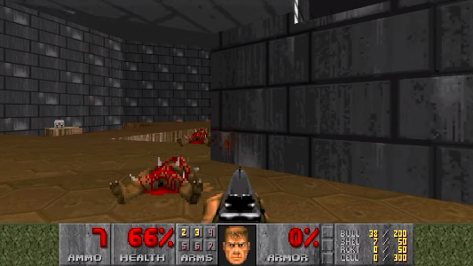

Return to the raycaster
What is a raycaster?
Raycasting is a technique of rendering a psuedo 3D world, meaning that it isn't real 3D but just a simulation of it.
In a nutshell, the way it works is that it, for every frame, sends out rays on a 2D plane from the player and detects if the rays hit a wall.
If they do, they render a column on the screen with a height relative to how far away the wall was from the player.
Thus, creating the illusion of a 3D world.

Examples
Raycasting has been used in a number of games back in the early 90's as that was as close to real 3D you would get when rendering in real time.
Some examples are games like Doom (1993) and Wolfenstein 3D (1992).

The issues
However, a number of issues can arise when creating such an engine, one of them being a fisheye effect.
This happens when you send out rays with a fixed number of degrees between each of them as doing so makes the rays more spaced the further to the edges you get.
To fix this you instead have an imaginary plane in front of the player where the rays have a fixed distance between each other, instead of an angle.
Thus, rendering straight walls instead of ones with a fisheye effect.
Another issue that has more to do with JavaScript is that it is extremely difficult to draw each seperate pixel on the screen
by itself for every frame tenfolds of times every second in JavaScript due to it not being as effective as, e.g. C++.
Another reason is that it isn't natively hardware accelerated either,
meaning that it runs entirely on the processor and not on any graphics card or integrated graphics unit.
When creating a raycaster in JavaScript, you instead draw the columns with single rectangles.
However, this seems like it would limit what you can do with the engine as you can no longer draw complex textures when the columns have to be the same color.
You can still render textures by rendering columns of it at a time with the image function.